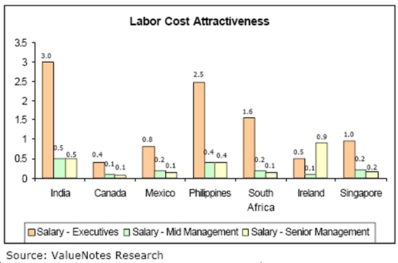

For companies in the United States and Western Europe looking to outsource, India and China are no longer the only choices. Outsourcing has bolstered India’s booming IT industry and China’s unparalleled manufacturing sector throughout the years, raising the standard of living. These changes have had long term effects and have significantly changed the costs of outsourcing to these countries.
Back in 2005, the cost of manufacturing in China was 25% to 30% of the US cost, but improvements in China's economy and the stability of its currency have driven manufacturing costs up. According to the Huffington Post, manufacturing costs in China will equal US costs by 2015.
The standard of living in China is also on a rapid rise, with wages increasing an average of 12% annually. Companies in China have to keep wages high if they want to attract and retain skilled workers, which has increased the competition and cost of labor.
While some companies are pulling out of China to outsource elsewhere, others are moving away from big cities like Shanghai and settling in other less expensive cities. India used to be a better alternative to China for IT outsourcing, but it is now experiencing issues similar to those occurring in China.
Salaries in India have risen 10% to 15% just in the last year. Many companies are looking in alternative countries for inexpensive and qualified developers. While inexpensive labor can be found in the graduates churned out by the thousands every year from numerous universities, finding skilled labor is much more expensive. Compared to other countries, employees higher up the ladder earn vastly more than their less skilled counterparts, as can be seen in the figure below.

Companies that are pulling out from China and India are setting their sights on Eastern Europe, in countries like Poland, or South America, in countries like Argentina. These countries offer the same or better IT and software development services, with skilled labor, for lower wages. The overall cost of setting up an outsourcing firm is also comparatively less in these countries and they have better IP protection.
1. LeBeau, Phillip. "U.S. Manufacturing No More Expensive Than Outsourcing To China By 2015: Study."Huffington Post 09 01 2014, n. pag. Web. 9 Jan. 2014.
2. "Rising Costs Threaten India's Hold on Offshore IT."Outsourcing to India. N.p., n.d. Web. 10 Jan 2014.